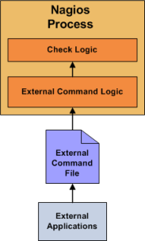

Up To: Contents
Up To: Contents
 See Also: Active Checks, Service Checks, Host Checks
See Also: Active Checks, Service Checks, Host Checks
Introduction
In most cases you'll use Nagios to monitor your hosts and services using regularly scheduled active checks. Active checks can be used to "poll" a device or service for status information every so often. Nagios also supports a way to monitor hosts and services passively instead of actively. They key features of passive checks are as follows:
The major difference between active and passive checks is that active checks are initiated and performed by Nagios, while passive checks are performed by external applications.
Uses For Passive Checks
Passive checks are useful for monitoring services that are:
Examples of asynchronous services that lend themselves to being monitored passively include SNMP traps and security alerts. You never know how many (if any) traps or alerts you'll receive in a given time frame, so it's not feasible to just monitor their status every few minutes.
Passive checks are also used when configuring distributed or redundant monitoring installations.
How Passive Checks Work
Here's how passive checks work in more detail...
The processing of active and passive check results is essentially identical. This allows for seamless integration of status information from external applications with Nagios.
Enabling Passive Checks
In order to enable passive checks in Nagios, you'll need to do the following:
If you want to disable processing of passive checks on a global basis, set the accept_passive_service_checks directive to 0.
If you would like to disable passive checks for just a few hosts or services, use the passive_checks_enabled directive in the host and/or service definitions to do so.
Submitting Passive Service Check Results
External applications can submit passive service check results to Nagios by writing a PROCESS_SERVICE_CHECK_RESULT external command to the external command file.
The format of the command is as follows:
[<timestamp>] PROCESS_SERVICE_CHECK_RESULT;<host_name>;<svc_description>;<return_code>;<plugin_output>
where...
 Note: A service must be defined in Nagios before you can submit passive check results for it! Nagios will ignore all check results for services that had not been configured before it was last (re)started.
Note: A service must be defined in Nagios before you can submit passive check results for it! Nagios will ignore all check results for services that had not been configured before it was last (re)started.
 An example shell script of how to submit passive service check results to Nagios can be found in the documentation on volatile services.
An example shell script of how to submit passive service check results to Nagios can be found in the documentation on volatile services.
Submitting Passive Host Check Results
External applications can submit passive host check results to Nagios by writing a PROCESS_HOST_CHECK_RESULT external command to the external command file.
The format of the command is as follows:
[<timestamp>] PROCESS_HOST_CHECK_RESULT;<host_name>;<host_status>;<plugin_output>
where...
Note: A host must be defined in Nagios before you can submit passive check results for it! Nagios will ignore all check results for hosts that had not been configured before it was last (re)started.
Passive Checks and Host States
Unlike with active host checks, Nagios does not (by default) attempt to determine whether or host is DOWN or UNREACHABLE with passive checks. Rather, Nagios takes the passive check result to be the actual state the host is in and doesn't try to determine the host's actual state using the reachability logic. This can cause problems if you are submitting passive checks from a remote host or you have a distributed monitoring setup where the parent/child host relationships are different.
You can tell Nagios to translate DOWN/UNREACHABLE passive check result states to their "proper" state by using the translate_passive_host_checks variable. More information on how this works can be found here.
Note: Passive host checks are normally treated as HARD states, unless the passive_host_checks_are_soft option is enabled.
Submitting Passive Check Results From Remote Hosts

If an application that resides on the same host as Nagios is sending passive host or service check results, it can simply write the results directly to the external command file as outlined above. However, applications on remote hosts can't do this so easily.
In order to allow remote hosts to send passive check results to the monitoring host, I've developed the NSCA addon. The NSCA addon consists of a daemon that runs on the Nagios hosts and a client that is executed from remote hosts. The daemon will listen for connections from remote clients, perform some basic validation on the results being submitted, and then write the check results directly into the external command file (as described above). More information on the NSCA addon can be found here.